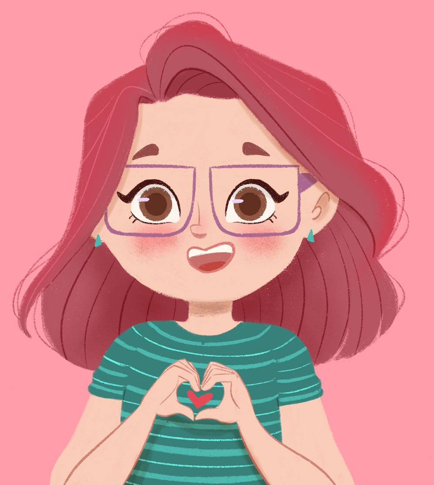

Raquel Riemma
Ilustradora e Programadora
Contato
- +55 19 90000-1111
- raquel@email.com
- www.raquel.com
- raquelriemma
Skills
Ilustração Digital, Design de Personagens, Ilustração Infantil
HTML, CSS, JavaScript, Git & GitHubb, Python